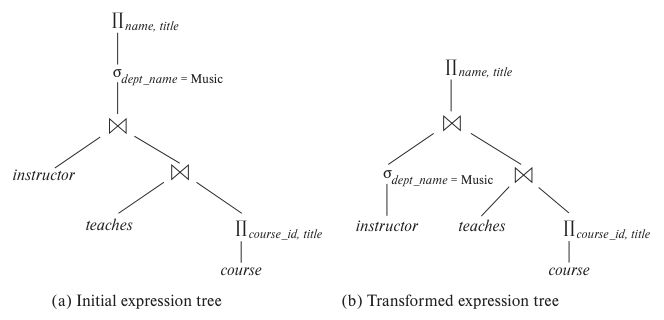
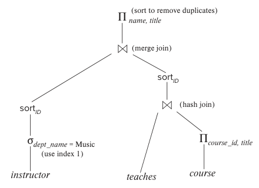
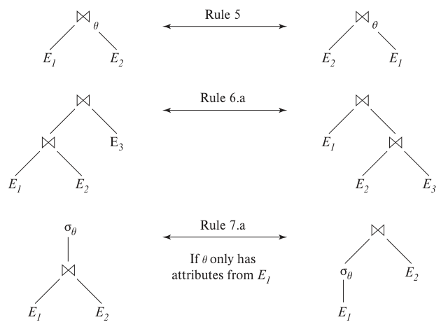
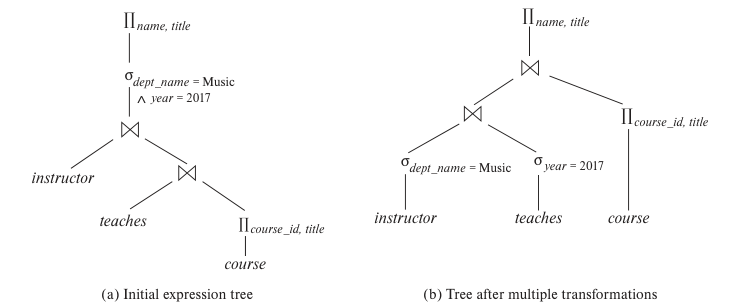
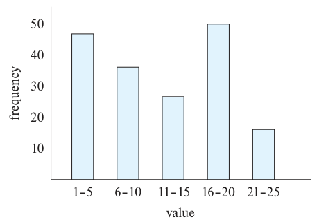
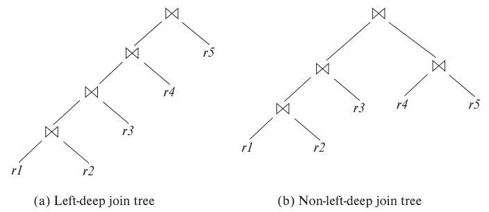

第16章 查询优化

对于给定查询，通常有许多处理策略，复杂查询尤其如此。查询优化就是从中选择最高效的查询执行计划的过程。用户不必为高效执行而刻意安排查询写法；系统应负责构建尽量降低执行成本的计划，查询优化由此发挥作用。
查询优化的一部分在关系代数层面进行：系统寻找与给定表达式等价、但执行更高效的表达式。另一方面是选择处理查询的具体策略，例如为某个运算选择执行算法、确定使用哪些索引，等等。
以执行时间衡量，好策略与差策略的成本往往相差很大，可能达到几个数量级。因此，即使查询只执行一次，系统也值得花相当多的时间，为它选择合适的处理策略。
16.1 概述
考虑以下关系代数表达式，对应查询“找出音乐系所有教师的姓名，以及他们所教全部课程的名称”。1
Πname,title(σdept_name = “Music”(instructor ⋈ (teaches ⋈ Πcourse_id,title(course))))
其中的子表达式 instructor ⋈ teaches ⋈ Πcourse_id,title(course) 可能产生很大的中间结果。但我们只关心其中少量元组，即与音乐系教师相关的元组，而且只需要该关系九个属性中的两个。既然只关注 instructor 中音乐系教师的元组，就无需考虑 dept_name 不等于“Music”的元组。减少需要访问的 instructor 元组数，就能缩小中间结果。现在，查询可以表示为：
Πname,title((σdept_name = “Music”(instructor)) ⋈ (teaches ⋈ Πcourse_id,title(course)))
它与原表达式等价，但生成的中间关系更小。图 16.1 展示了初始表达式与变换后的表达式。

图 16.1 等价表达式。 (a) 初始表达式树；(b) 变换后的表达式树。变换将音乐系的选择条件移至 instructor 输入处。
执行计划明确规定每个运算使用哪种算法，以及如何协调各运算的执行。图 16.2 给出了图 16.1(b) 表达式的一种执行计划。前面已经看到，每个关系运算都可以采用不同算法，因而有多种备选执行计划。图中一个连接使用散列连接，另一个先按连接属性 ID 对输入排序，再使用归并连接。除标为物化的边外，所有边都假定采用流水线。对于流水线边，生产者的输出直接交给消费者，无需写入磁盘；对于物化边，输出先写到磁盘，再由消费者从磁盘读入。图 16.2 的执行计划没有物化边，不过，排序、散列连接等某些运算符可以表示为若干子运算符，子运算符之间有物化边，见 15.7.2.2 节。

图 16.2 一种执行计划。 use index 1 表示使用索引 1；sortID 表示按 ID 排序；hash join、merge join 分别表示散列连接和归并连接；sort to remove duplicates 表示通过排序消除重复项。
给定关系代数表达式后，查询优化器的任务是生成一个计算相同结果的执行计划，使生成结果的成本最低，或至少不明显高于最低成本。
图 16.1 的表达式未必能导出成本最低的执行计划，因为它仍然要计算整个 teaches 与 course 的连接。下面的表达式得到相同的最终结果，却产生更小的中间结果：先将 teaches 与 instructor 中音乐系教师的元组连接，再与 course 连接。
Πname,title((σdept_name = “Music”(instructor) ⋈ teaches) ⋈ Πcourse_id,title(course))
无论查询怎样书写，优化器都应为它寻找成本最低的计划。
为此，优化器需要生成与给定表达式产生相同结果的备选计划，再选出成本最低的一个。生成查询执行计划包括三个步骤：①生成与给定表达式在逻辑上等价的表达式；②以不同方式为这些表达式添加执行说明，产生备选查询执行计划；③估算各计划成本，选择估计成本最低的计划。
这三个步骤在优化器中交错进行：先生成一些表达式并添加执行说明，形成执行计划，再生成其他表达式并添加执行说明，依此类推。生成执行计划时，利用关系大小、索引深度等统计信息估算其成本。
为完成第一步，优化器使用等价规则生成与给定表达式等价的表达式。这些规则说明如何将一个表达式转换为逻辑上等价的另一个表达式。16.2 节介绍这些规则。
16.3 节介绍如何估计查询计划中各运算结果的统计信息。结合这些统计信息与第 15 章的成本公式，就能估算单个运算的成本。再按 15.7 节的方法将各项成本组合起来，得到执行整个关系代数表达式的估计成本。
16.4 节介绍如何选择查询执行计划，可以依据各计划的估计成本进行选择。由于成本只是估计值，选出的计划未必实际成本最低；但只要估计合理，该计划就很可能成本最低，或与最低成本相差不大。
最后，物化视图能加快某些查询的处理。16.5 节研究如何“维护”物化视图，使它保持最新，以及如何利用物化视图进行查询优化。
注 16.1 查看查询执行计划
大多数数据库系统都提供查看某个查询所选执行计划的方法。通常最好使用数据库自带的图形界面。使用命令行时，许多数据库支持 explain <query> 这一类命令，用来显示指定查询 <query> 的执行计划。具体语法因数据库而异。
- PostgreSQL 使用上述语法。
- Oracle 使用
explain plan for。该命令将计划存入名为plan_table的表中，并不直接显示。执行select * from table(dbms_xplan.display);可显示已保存的计划。 - DB2 采用类似 Oracle 的方式，但需要运行
db2exfmt程序显示已保存的计划。 - SQL Server 需要在提交查询前执行
set showplan_text on；随后提交查询时，系统显示执行计划，不执行查询。 - MySQL 与 PostgreSQL 一样使用
explain <query>，但输出表格较难理解。在explain后执行show warnings，可以用较易读的形式显示执行计划。
执行计划会同时显示估计成本。这些成本通常不以秒、I/O 次数等有外部实际含义的单位表示，而是采用优化器成本模型自己的单位。PostgreSQL 等优化器显示两个估计成本：第一个表示输出第一条结果的估计成本，第二个表示输出全部结果的估计成本。
16.2 关系表达式的变换
同一个查询可以有多种表达方式，各自的执行成本不同。本节考虑如何从给定的关系表达式出发，寻找其他等价表达式。
如果两个关系代数表达式在每个合法数据库实例上都产生相同的元组集合，就称它们等价。合法实例是指满足数据库模式中全部完整性约束的实例。元组顺序不影响等价性：两个表达式可以按不同顺序产生元组，只要元组集合相同，就认为它们等价。
SQL 的输入和输出是元组的多重集，因此执行 SQL 查询时，采用多重集版本的关系代数，见原书第 80 页注 3.1、第 97 页注 3.2 和第 108 页注 3.3。在多重集关系代数中，如果两个表达式在每个合法数据库上都产生相同的元组多重集，就称它们等价。本章基于通常的关系代数展开讨论，扩展到多重集版本的工作留作练习。
16.2.1 等价规则
等价规则指出两种形式的表达式等价。由于它们在任何合法数据库上都产生相同结果，可以用第二种形式替换第一种形式，也可以反向替换。优化器据此将表达式转换为其他逻辑等价的表达式。
下面介绍一些关系代数表达式的等价规则，其中部分规则用图 16.3 表示。用 θ、θ₁、θ₂ 等表示谓词，L₁、L₂、L₃ 等表示属性列表，E、E₁、E₂ 等表示关系代数表达式。关系名 r 本身就是关系代数表达式的特例，可以出现在任何允许 E 出现的位置。
1. 合取选择可以分解为一连串单独的选择，称为 σ 的级联。
σθ₁∧θ₂(E) ≡ σθ₁(σθ₂(E))
2. 选择运算满足交换律。
σθ₁(σθ₂(E)) ≡ σθ₂(σθ₁(E))

图 16.3 等价规则的图形表示。 三行分别对应规则 5、6.a 和 7.a。最后一行的条件是 θ 只包含 E₁ 的属性。
3. 一连串投影运算只需保留最后执行的投影，其余可以省略。这种变换也称为 Π 的级联。
ΠL₁(ΠL₂(…(ΠLₙ(E))…)) ≡ ΠL₁(E)
其中 L₁ ⊆ L₂ ⊆ ⋯ ⊆ Lₙ。
4. 选择可以与笛卡尔积、θ 连接组合。
a. σθ(E₁ × E₂) ≡ E₁ ⋈θ E₂
这正是 θ 连接的定义。
b. σθ₁(E₁ ⋈θ₂ E₂) ≡ E₁ ⋈θ₁∧θ₂ E₂
5. θ 连接满足交换律。
E₁ ⋈θ E₂ ≡ E₂ ⋈θ E₁
自然连接是 θ 连接的特例，因此也满足交换律。
交换律左右两边的属性顺序不同，若把属性顺序也考虑在内，两边便不等价。本书采用的关系代数要求通过名称引用属性，因此除最终显示结果外，属性顺序并不影响运算。需要考虑顺序时，可以在等价式的一侧加一个投影，适当调整属性次序。为简化讨论，以下全部等价规则都省略这一投影，并忽略属性顺序。
6.a. 自然连接满足结合律。
(E₁ ⋈ E₂) ⋈ E₃ ≡ E₁ ⋈ (E₂ ⋈ E₃)
b. θ 连接满足如下形式的结合律：
(E₁ ⋈θ₁ E₂) ⋈θ₂∧θ₃ E₃ ≡ E₁ ⋈θ₁∧θ₃ (E₂ ⋈θ₂ E₃)
其中 θ₂ 只涉及 E₂ 和 E₃ 的属性。任一条件都可以为空，因此笛卡尔积（×）也满足结合律。连接的交换律和结合律，对查询优化中的连接重排序很重要。
7. 在以下两种情况下，选择对 θ 连接满足分配律。
a. 选择条件 θ₁ 中的全部属性，都来自参与连接的某一个表达式，例如 E₁。
σθ₁(E₁ ⋈θ E₂) ≡ (σθ₁(E₁)) ⋈θ E₂
b. 选择条件 θ₁ 只涉及 E₁ 的属性，θ₂ 只涉及 E₂ 的属性。
σθ₁∧θ₂(E₁ ⋈θ E₂) ≡ (σθ₁(E₁)) ⋈θ (σθ₂(E₂))
8. 投影在以下条件下对 θ 连接满足分配律。
a. 设 L₁、L₂ 分别为 E₁、E₂ 的属性，且连接条件 θ 只涉及 L₁ ∪ L₂ 中的属性，则：
ΠL₁∪L₂(E₁ ⋈θ E₂) ≡ (ΠL₁(E₁)) ⋈θ (ΠL₂(E₂))
b. 考虑连接 E₁ ⋈θ E₂。设 L₁、L₂ 分别为 E₁、E₂ 的属性集；L₃ 是 E₁ 中参与连接条件 θ、却不在 L₁ 中的属性；L₄ 是 E₂ 中参与 θ、却不在 L₂ 中的属性，则：
ΠL₁∪L₂(E₁ ⋈θ E₂) ≡ ΠL₁∪L₂((ΠL₁∪L₃(E₁)) ⋈θ (ΠL₂∪L₄(E₂)))
外连接 ⟕、⟖ 和 ⟗ 也有类似的等价关系。
9. 集合并运算和交运算满足交换律。
a. E₁ ∪ E₂ ≡ E₂ ∪ E₁
b. E₁ ∩ E₂ ≡ E₂ ∩ E₁
差运算不满足交换律。
10. 集合并运算和交运算满足结合律。
a. (E₁ ∪ E₂) ∪ E₃ ≡ E₁ ∪ (E₂ ∪ E₃)
b. (E₁ ∩ E₂) ∩ E₃ ≡ E₁ ∩ (E₂ ∩ E₃)
11. 选择对并、交、差运算满足分配律。
a. σθ(E₁ ∪ E₂) ≡ σθ(E₁) ∪ σθ(E₂)
b. σθ(E₁ ∩ E₂) ≡ σθ(E₁) ∩ σθ(E₂)
c. σθ(E₁ − E₂) ≡ σθ(E₁) − σθ(E₂)
d. σθ(E₁ ∩ E₂) ≡ σθ(E₁) ∩ E₂
e. σθ(E₁ − E₂) ≡ σθ(E₁) − E₂
如果把最后一个等价式中的 − 换成 ∪，两边就不再等价。
12. 投影对并运算满足分配律：
ΠL(E₁ ∪ E₂) ≡ (ΠL(E₁)) ∪ (ΠL(E₂))
前提是 E₁ 和 E₂ 具有相同模式。
13. 选择在以下条件下对聚合满足分配律。设 G 为分组属性集，A 为聚合表达式集。当 θ 只涉及 G 中的属性时，有以下等价关系：
σθ(GγA(E)) ≡ GγA(σθ(E))
译注：原书等号左边少了最外层选择的右括号，此处已补齐。
14.a. 全外连接满足交换律。
E₁ ⟗ E₂ ≡ E₂ ⟗ E₁
译注：原书右边误印为 E₂ ⟗ E₂；按交换律应为 E₂ ⟗ E₁。
b. 左外连接和右外连接不满足交换律，但可以按下面的方式互换：
E₁ ⟕ E₂ ≡ E₂ ⟖ E₁
15. 选择在某些条件下对左外连接和右外连接满足分配律。
具体来说，选择条件 θ₁ 只涉及某一个参与连接的表达式，例如 E₁ 的属性时，有以下等价关系：
a. σθ₁(E₁ ⟕θ E₂) ≡ (σθ₁(E₁)) ⟕θ E₂
b. σθ₁(E₂ ⟖θ E₁) ≡ (E₂ ⟖θ (σθ₁(E₁)))
16. 在某些条件下，外连接可以替换为内连接。具体来说，如果 E₂ 的属性为 null 时，θ₁ 总是求值为 false 或 unknown，就有以下等价关系：
a. σθ₁(E₁ ⟕θ E₂) ≡ σθ₁(E₁ ⋈θ E₂)
b. σθ₁(E₂ ⟖θ E₁) ≡ σθ₁(E₂ ⋈θ E₁)
译注：原书 16.b 右边误印为 σθ₁(E₂ ⋈θ E₂)，其中第二个 E₂ 应为 E₁。
满足上述性质的谓词 θ₁ 称为对 E₂ 拒绝空值（null rejecting）。例如，若 θ₁ 形如 A < 4，且 A 是 E₂ 的属性，则 A 为 null 时 θ₁ 的结果为 unknown。这样，E₁ ⟕θ E₂ 中那些不属于 E₁ ⋈θ E₂ 的元组，都会被 σθ₁ 排除，因而可以用内连接替换外连接，或反向替换。
更一般地说，若 θ₁ 形如 θ₁¹ ∧ θ₁² ∧ ⋯ ∧ θ₁k，其中至少一项 θ₁i 形如 e₁ relop e₂，e₁、e₂ 是至少涉及 E₂ 一个属性的算术或字符串表达式，relop 为 <、≤、=、≥、> 中的任一种，则满足上述条件。
这里只列出了部分等价关系，练习中还会讨论更多规则。
连接所具有的某些等价关系，不适用于外连接。例如，未满足规则 15.a 或 15.b 指定的条件时，选择对外连接就不一定满足分配律。考虑下面的表达式：
译注：原书此处写作“条件满足时”（do hold），与规则 15 及随后的反例矛盾；此处按上下文译为“未满足条件时”。
σyear=2017(instructor ⟕ teaches)
考虑一位无论哪一年都没有教过课的教师。上述左外连接为这类教师各保留一个元组，year 为 null。随后选择运算会删除这些元组，因为 null = 2017 的结果为 unknown，因此结果中没有这些教师。但如果把选择下推到 teaches，得到：
instructor ⟕ σyear=2017(teaches)
由于选择谓词只涉及 teaches 的属性，这个表达式在语法上合法，结果却不同。对于完全没有教过课的教师，其元组会出现在 instructor ⟕ σyear=2017(teaches) 的结果中，却不会出现在 σyear=2017(instructor ⟕ teaches) 中。不过，下面的等价关系仍然有效：
σyear=2017(instructor ⟕ teaches) ≡ σyear=2017(instructor ⋈ teaches)
另一个例子是：外连接不具有内连接的结合律。下面用自然左外连接举例。自然右外连接、自然全外连接，以及带 θ 条件的各种外连接，也能构造类似例子。
设 r(A, B) 只包含元组 (1, 1)，s(B, C) 也只包含元组 (1, 1)，t(A, C) 为空关系，没有任何元组。对于这个例子，我们将说明：
(r ⟕ s) ⟕ t ≢ r ⟕ (s ⟕ t)
首先，r ⟕ s 的结果模式为 (A, B, C)，只含元组 (1, 1, 1)。将这个结果与 t 作左外连接，模式仍为 (A, B, C)，仍只含元组 (1, 1, 1)。再看 r ⟕ (s ⟕ t)：s ⟕ t 的结果模式为 (A, B, C)，只含元组 (null, 1, 1)。将 r 与该结果作左外连接，得到模式 (A, B, C)，其中只有元组 (1, 1, null)。
16.2.2 变换实例
下面说明如何使用等价规则。仍以大学数据库为例，其关系模式如下：
instructor(ID, name, dept_name, salary)
teaches(ID, course_id, sec_id, semester, year)
course(course_id, title, dept_name, credits)
在 16.1 节的例子中，表达式
Πname,title(σdept_name = “Music”(instructor ⋈ (teaches ⋈ Πcourse_id,title(course))))
被变换为：
Πname,title((σdept_name = “Music”(instructor)) ⋈ (teaches ⋈ Πcourse_id,title(course)))
这个表达式与原来的代数表达式等价，但产生的中间关系更小。该变换可利用规则 7.a 完成。要记住，规则只说明两个表达式等价，并未说明哪一个更好。
可以对查询或查询的某些部分依次使用多个等价规则。例如，修改原查询，只考虑在 2017 年讲授过课程的教师。新的关系代数查询为：
Πname,title(σdept_name = “Music” ∧ year = 2017(instructor ⋈ (teaches ⋈ Πcourse_id,title(course))))
选择谓词涉及 instructor 和 teaches 两个关系的属性，不能直接应用于 instructor。不过，可以先用规则 6.a（自然连接的结合律），把 instructor ⋈ (teaches ⋈ Πcourse_id,title(course)) 变为 (instructor ⋈ teaches) ⋈ Πcourse_id,title(course)：
Πname,title(σdept_name = “Music” ∧ year = 2017((instructor ⋈ teaches) ⋈ Πcourse_id,title(course)))
然后，利用规则 7.a 将查询改写为：
Πname,title((σdept_name = “Music” ∧ year = 2017(instructor ⋈ teaches)) ⋈ Πcourse_id,title(course))
来看这个表达式中的选择子表达式。利用规则 1，可将其分为两个选择，得到：
σdept_name = “Music”(σyear = 2017(instructor ⋈ teaches))
前后两个表达式都选择 dept_name = “Music” 且 year = 2017 的元组。不过，后一种写法又提供了应用规则 7.a（“尽早执行选择”）的机会，得到：
译注：原书此处文字将 year = 2017 误写为 course_id = 2017；依照前后的查询公式改正。
σdept_name = “Music”(instructor) ⋈ σyear = 2017(teaches)
图 16.4 给出了初始表达式以及完成上述各次变换后的最终表达式。也可以直接利用规则 7.b 得到最终表达式，无须先用规则 1 把选择分为两个选择。事实上，规则 7.b 本身就能由规则 1 和 7.a 推导出来。

图 16.4 多次变换。（a）初始表达式树；（b）经过多次变换的树。选择条件分别下推到 instructor 的 dept_name = “Music” 和 teaches 的 year = 2017；顶层仍投影 name、title，course 仍投影 course_id、title。
如果一组等价规则中的任何一条都无法由其他规则的任意组合推导出来，就称这组规则是极小的。上例表明，16.2.1 节的规则集并非极小规则集。与原表达式等价的同一个表达式可能由不同途径生成；采用非极小规则集时，生成同一表达式的不同途径会增加。因此，查询优化器使用极小等价规则集。
现在考虑示例查询的以下形式：
Πname,title((σdept_name = “Music”(instructor) ⋈ teaches) ⋈ Πcourse_id,title(course))
计算子表达式
(σdept_name = “Music”(instructor) ⋈ teaches)
会得到模式如下的关系：
(ID, name, dept_name, salary, course_id, sec_id, semester, year)
根据等价规则 8.a 和 8.b 下推投影，可以从该模式中消去若干属性。必须保留的只有出现在查询结果中，或处理后续运算所需的属性。去掉不需要的属性可以减少中间结果的列数，从而缩小中间结果。在本例中，instructor 与 teaches 的连接结果只需保留 name 和 course_id。因此，可将表达式改为：
Πname,title((Πname,course_id((σdept_name = “Music”(instructor)) ⋈ teaches)) ⋈ Πcourse_id,title(course))
投影 Πname,course_id 缩小了连接的中间结果。
16.2.3 连接顺序
合理安排连接运算的顺序，对于减小临时结果十分重要；多数查询优化器因而十分关注连接顺序。如等价规则 6.a 所述，自然连接满足结合律，即对于任意关系 r₁、r₂ 和 r₃：
(r₁ ⋈ r₂) ⋈ r₃ ≡ r₁ ⋈ (r₂ ⋈ r₃)
尽管两个表达式等价，计算成本却可能不同。再次考虑表达式：
Πname,title((σdept_name = “Music”(instructor)) ⋈ teaches ⋈ Πcourse_id,title(course))
可以先计算 teaches ⋈ Πcourse_id,title(course)，再将结果与下式连接：
σdept_name = “Music”(instructor)
teaches ⋈ Πcourse_id,title(course) 很可能较大，因为每门讲授的课程都对应一个元组。相比之下，
σdept_name = “Music”(instructor) ⋈ teaches
很可能是较小的关系。大学的教师人数少于课程数，而且大学有许多系，音乐系教师很可能只占全校教师的一小部分。上式只为音乐系教师讲授的每门课程产生一个元组，需保存的临时关系便比先计算 teaches ⋈ Πcourse_id,title(course) 时小。
计算该查询还有其他选择。连接结果中属性的排列顺序并不重要，因为在显示结果之前很容易调整顺序。因此，对于任意关系 r₁ 和 r₂：
r₁ ⋈ r₂ ≡ r₂ ⋈ r₁
即自然连接满足交换律（等价规则 5）。
利用自然连接的结合律和交换律（规则 5 和 6），考虑以下关系代数表达式：
(instructor ⋈ Πcourse_id,title(course)) ⋈ teaches
Πcourse_id,title(course) 与 instructor 没有公共属性，所以它们的连接就是笛卡尔积。如果 instructor 有 a 个元组，而 Πcourse_id,title(course) 有 b 个元组，笛卡尔积便产生 a ∗ b 个元组，为教师元组和课程的每一种可能配对产生一个元组，不管该教师是否教过这门课程。这个笛卡尔积会产生很大的临时关系。不过，如果用户输入了上面的表达式，可以利用自然连接的结合律和交换律，将其变换为更高效的表达式：
(instructor ⋈ teaches) ⋈ Πcourse_id,title(course)
16.2.4 枚举等价表达式
查询优化器可以利用等价规则，系统地生成与给定查询表达式等价的表达式。表达式的成本依据 16.3 节介绍的统计信息来计算。16.4 节将介绍基于成本的查询优化器：它们计算每个备选方案的成本，选出成本最低的方案。
procedure genAllEquivalent(E)
EQ = {E}
repeat
Match each expression Ei in EQ with each equivalence rule Rj
if any subexpression ei of Ei matches one side of Rj
Create a new expression E′ which is identical to Ei, except that
ei is transformed to match the other side of Rj
Add E′ to EQ if it is not already present in EQ
until no new expression can be added to EQ
图 16.5 生成所有等价表达式的过程。
从概念上说，可以按图 16.5 的方式枚举等价表达式。给定查询表达式 E，等价表达式集合 EQ 最初只含 E。然后，把 EQ 中的每个表达式与每条等价规则匹配。如果表达式 Eᵢ ∈ EQ 的某个子表达式 eⱼ（也可以是 Eᵢ 本身）匹配某条等价规则的一侧，优化器就生成 Eᵢ 的一个副本 Eₖ，在其中将 eⱼ 变换为规则另一侧的形式，并把 Eₖ 加入 EQ。重复此过程，直到无法生成新的表达式。只要恰当选择等价规则集，等价表达式的集合就是有限的，可以保证该过程终止。
例如，给定表达式 r ⋈ (s ⋈ t)，交换律可以匹配子表达式 (s ⋈ t)，生成新表达式 r ⋈ (t ⋈ s)。交换律也能匹配 r ⋈ (s ⋈ t) 根节点处的连接，生成新表达式 (s ⋈ t) ⋈ r。还可以继续应用结合律和交换律生成新的表达式。但最终，任何等价规则都只能生成此前已经生成过的表达式，过程随之终止。
上述过程的空间和时间成本都很高，但优化器可利用以下两种思路大幅降低成本。
- 如果在表达式 E₁ 的子表达式 eᵢ 上应用等价规则，得到表达式 E′，那么除 eᵢ 及其变换结果外，E′ 与 E₁ 的子表达式完全相同。即使 eᵢ 与其变换结果，通常也共享许多相同的子表达式。采用允许两个表达式指向共享子表达式的表达式表示技术，可以显著降低空间需求。
- 并非总有必要生成等价规则能够生成的每一个表达式。优化器若考虑执行成本的估计值，就可能避免检查其中一些表达式，16.4 节将讨论这一点。此类技术可以减少优化所需的时间。
利用这些以及其他减少优化时间的技术，可以用等价规则枚举备选计划，计算各计划的成本，再选出成本最低的计划。16.4.2 节将介绍如何高效实现基于等价规则的成本优化。
有些查询优化器以启发式方式使用等价规则：若某条规则的左侧匹配查询计划中的一棵子树，就把子树改写为与规则右侧匹配的形式。重复此过程，直到查询计划无法进一步改写。规则必须经过仔细选择，使每次应用都能降低成本，并且改写过程最终能够终止。虽然这种方法执行起来很快，却不能保证找到最优计划。
还有一些查询优化器专注于选择连接顺序，因为连接顺序往往是影响查询成本的重要因素。16.4.1 节将讨论连接顺序优化算法。
16.3 表达式结果的统计信息估算
运算的成本取决于输入的大小及其他统计信息。对于 r ⋈ (s ⋈ t) 这样的表达式，要估算 r 与 (s ⋈ t) 连接的成本，就需要先估算 s ⋈ t 的大小等统计信息。
本节先列出数据库系统目录中保存的部分关系统计信息，再介绍如何利用这些信息，估算各种关系运算结果的统计信息。
给定查询表达式，可以将它看作一棵树：从最底层运算开始估算统计信息，再逐层向上，直到树根。如第 15 章所述，统计信息中的大小估计值可以用于计算树中各运算算法的成本，将这些成本相加便得到整个查询计划的成本。
本节后文将说明，这些估计并不十分准确，因为它们依赖的假设未必完全符合实际。因此，估计执行成本最低的查询执行计划，实际执行成本未必最低。不过，实践表明，即使估计不够精确，估计成本最低的计划，其实际执行成本通常也最低或接近最低。
16.3.1 目录信息
数据库系统目录保存以下关于数据库关系的统计信息：
- nr：关系 r 的元组数。
- br：存放关系 r 元组的块数。
- lr：关系 r 一个元组的字节数。
- fr：关系 r 的块因子，即一个块能容纳的 r 元组数。
- V(A, r)：关系 r 中属性 A 的不同值个数。它等于 ΠA(r) 的大小；如果 A 是 r 的键，则 V(A, r) = nr。
最后一项 V(A, r) 也可按需要为属性集合维护，而不限于单个属性。对于属性集合 𝒜，V(𝒜, r) 就是 Π𝒜(r) 的大小。
如果假设关系 r 的元组集中存放在同一个文件中，则有：
br = ⌈nr / fr⌉
目录也维护索引的统计信息，例如 B+ 树索引的高度和叶页数。
要使统计信息准确，每次修改关系时都必须更新统计信息，这会带来相当大的开销。因此，多数系统不会在每次修改时更新统计信息，而在系统负载较轻时更新。用于选择查询处理策略的统计信息因而可能并不完全准确。不过，只要两次统计更新之间发生的数据更新不太多，这些统计信息就足以较好地估计不同计划的相对成本。
上述统计信息经过了简化。实际优化器常维护更多统计信息，提高执行计划成本估计的准确性。例如，多数数据库使用直方图存储各属性的值分布。直方图把属性值分为若干区间，并为每个区间记录属性值落入其中的元组数。图 16.6 是一个整数属性的直方图示例，该属性的取值范围为 1 到 25。
例如，person 关系中 age 属性的值域可划分为 0—9、10—19、……、90—99（假设最大年龄为 99）。为每个区间保存 age 值落入其中的 person 元组数。

图 16.6 直方图示例。横轴为属性值（value），分为 1—5、6—10、11—15、16—20、21—25 五个区间；纵轴为频数（frequency），标出了 10、20、30、40、50。
图 16.6 是等宽直方图，因为各取值区间的宽度相同。等深直方图则调整区间边界，使每个区间包含相同数量的值。因此，等深直方图只需保存区间划分的边界，无须保存各区间的值数。例如，图 16.6 所示数据的等深直方图可以是：
(4, 8, 14, 19)
这个直方图表示，1/5 的元组 age 小于 4，另有 1/5 的元组满足 age ≥ 4 且 age < 8，依此类推，最后 1/5 的元组满足 age ≥ 19。直方图还保存元组总数。与等宽直方图相比，等深直方图估计更准确、占用空间更少，因而更常被采用。
译注：本段讨论等深直方图，原书“元组总数也随直方图保存”一句却写作 equi-width（等宽）；这里按上下文表述为“直方图”。
数据库系统的直方图除了记录属性值落入各区间的元组数，还可以记录各区间的不同值个数。例如，可在直方图中保存每个区间内不同 age 值的个数。缺少这类直方图信息时，优化器只能假设值均匀分布，即各区间的不同值个数相同。
许多数据库应用中，有些值的出现频率远高于其他值。为了更好地估计指定这些值的查询，许多数据库保存出现频率最高的 n 个值（例如 5 个或 10 个），以及每个值的出现次数。在本例中，如果 4、7、18、19、23 岁是最常见的五个年龄，数据库可以分别记录各年龄的人数。由于这些值已有精确计数，直方图就只保存其余年龄值的统计信息。
直方图占用的空间很少，因此系统目录可以保存多个不同属性的直方图。
16.3.2 选择结果的大小估算
选择运算结果的大小估计取决于选择谓词。先考虑单个等值谓词，再考虑单个比较谓词，最后考虑谓词的组合。
σA = a(r)。 如果 a 是已记录出现次数的高频值，可以直接用该次数作为选择结果的大小估计。
否则，若没有直方图，就假设各值均匀分布，即各值出现的概率相同。在假设 r 中某条记录的 A 属性确实取值为 a 的前提下，选择结果估计包含 nr / V(A, r) 个元组。选择值 a 存在于某条记录中的假设通常符合实际，成本估计也常隐含采用这一假设。不过，各值出现概率相同往往不符合实际。例如，takes 的 course_id 属性就不符合这一假设：热门本科课程的学生人数往往远多于小规模的专业研究生课程，所以某些 course_id 值的出现概率高于其他值。均匀分布假设虽然常有偏差，但在许多情形下仍是合理的近似，也有助于简化这里的介绍。
如果 A 有直方图，可以先找到 a 所在区间，再修正 nr / V(A, r) 的估计：用该区间的频数代替 nr，用该区间的不同值个数代替 V(A, r)。
σA ≤ v(r)。 考虑 σA ≤ v(r) 形式的选择。假设目录保存了属性的最小值 min(A, r) 和最大值 max(A, r)。若值均匀分布，满足 A ≤ v 的记录数可估计为：
- v < min(A, r) 时为 0；
- v ≥ max(A, r) 时为 nr；
- 其他情况下为 nr ⋅ (v − min(A, r)) / (max(A, r) − min(A, r))。
若 A 有直方图，估计可以更准确；具体方法留作练习。
有时，例如查询属于某个存储过程时，优化查询时还不知道 v 的值。这时假设约有一半记录满足比较条件，即结果有 nr / 2 个元组。这一估计可能很不准确，但在没有更多信息的情况下，也只能如此。
复杂选择。
合取。 合取选择的形式为：
σθ₁ ∧ θ₂ ∧ ⋯ ∧ θₙ(r)
可按前述方法，为每个 θᵢ 估计 σθᵢ(r) 的大小，记为 sᵢ。于是，关系中一个元组满足 θᵢ 的概率为 sᵢ / nr。
这个概率称为 σθᵢ(r) 的选择率。假设各条件彼此独立，一个元组满足全部条件的概率就是这些概率的乘积。因此，整个选择结果的元组数估计为：
nr ∗ (s₁ ∗ s₂ ∗ ⋯ ∗ sₙ) / nrn
析取。 析取选择的形式为：
σθ₁ ∨ θ₂ ∨ ⋯ ∨ θₙ(r)
分别满足各简单条件 θᵢ 的记录集合的并集，就是满足析取条件的记录集合。
仍以 sᵢ / nr 表示元组满足 θᵢ 的概率。元组满足析取条件的概率，等于 1 减去它不满足任何一个条件的概率：
1 − (1 − s₁/nr) ∗ (1 − s₂/nr) ∗ ⋯ ∗ (1 − sₙ/nr)
将此值乘以 nr，就得到满足选择条件的元组数估计值。
否定。 没有空值时，σ¬θ(r) 的结果就是 r 中不属于 σθ(r) 的元组。已有方法估算 σθ(r) 的元组数，因此 σ¬θ(r) 的元组数可估计为 nr 减去 σθ(r) 的元组数估计值。
要考虑空值，可以估计使 θ 求值为 unknown 的元组数，再从上述忽略空值的估计结果中减去该数目。这需要在目录中维护额外的统计信息。
注 16.2 统计信息的计算与维护
从概念上说，关系的统计信息可以看作物化视图，应在关系修改时自动维护。但每次插入、删除或更新都保持统计信息最新，成本可能很高。另一方面，优化器通常不需要精确的统计信息：几个百分点的误差可能使系统选择一个略逊于最优的计划，但这个计划的成本很可能也只比最优成本高几个百分点。因此，近似统计信息是可以接受的。
数据库系统利用这一点，采用以下方法降低统计信息生成和维护的成本。
- 通常从底层数据的样本中计算统计信息，无须检查全部数据。例如，即使关系有几百万或几亿条记录，也能用几千个元组的样本计算出相当准确的直方图。不过，必须使用随机样本；非随机样本可能过多地包含关系中的某一部分，从而产生误导。例如，抽取教师样本来计算工资直方图时，如果低工资教师占比过高，直方图就会产生错误估计。如今数据库系统普遍用随机抽样生成统计信息。有关抽样的参考文献见在线文献注释。
- 不在每次数据库更新时维护统计信息。有些数据库系统从不自动更新统计信息，依赖数据库管理员定期执行更新统计信息的命令。Oracle 和 PostgreSQL 提供 SQL 命令
analyze，用于为指定关系或全部关系生成统计信息；IBM DB2 的对应命令为runstats。详情参见各系统手册。需要留意，统计信息错误有时会使优化器选出很差的计划。IBM DB2、Oracle、SQL Server 等许多系统会在特定时点自动更新统计信息。例如，系统可以粗略跟踪关系中的元组数，在数目发生显著变化时重新计算统计信息。另一种方法是在查询执行时，将关系扫描的估计基数与实际基数比较；若差异很大，就启动该关系的统计信息更新。
16.3.3 连接结果的大小估算
本节介绍如何估计连接结果的大小。
笛卡尔积 r × s 包含 nr ∗ ns 个元组，每个元组占用 lr + ls 字节，据此即可计算笛卡尔积的大小。
自然连接的大小估计比选择或笛卡尔积略复杂。设有关系 r(R) 和 s(S)。
- 如果 R ∩ S = ∅，即两个关系没有公共属性，则 r ⋈ s 与 r × s 相同，可以沿用笛卡尔积的估计方法。
- 如果 R ∩ S 是 R 的键，s 的一个元组最多只能与 r 的一个元组连接。因此，r ⋈ s 的元组数不超过 s 的元组数。R ∩ S 是 S 的键时，情形与此对称。如果 R ∩ S 是 S 中参照 R 的外键，r ⋈ s 的元组数就恰好等于 s 的元组数。
- 最难处理的是 R ∩ S 对 R、S 都不是键的情形。与选择估算相同，这里假设各值出现的概率相同。考虑 r 的一个元组 t，并假设 R ∩ S = {A}。估计 t 在 r ⋈ s 中产生的元组数为：
ns / V(A, s)
因为这是 s 中 A 取某个给定值的平均元组数。考虑 r 的全部元组，估计 r ⋈ s 的元组数为：
(nr ∗ ns) / V(A, s)
若交换 r 和 s 的角色，则得到另一个估计值：
(nr ∗ ns) / V(A, r)
当 V(A, r) ≠ V(A, s) 时，两个估计值不同。这时很可能有一些不参与连接的悬挂元组，因此两个估计值中较小的那个可能更准确。
如果 r 中 A 的 V(A, r) 个值与 s 中 A 的 V(A, s) 个值只有少量公共值，上述连接大小估计就可能偏高。不过，这种情形在实际中并不常见，因为多数实际关系中没有悬挂元组，或者悬挂元组只占很小一部分。
更重要的是，上述估计依赖各值出现概率相同的假设。如果这一假设不符合实际，就需要更复杂的估计技术。例如，若两个关系的连接属性均有直方图，而且区间相同，就可以在各区间内应用上述方法：用区间内的行数代替 nr 或 ns，用区间内的不同值个数代替 V(A, r) 或 V(A, s)。然后将各区间的估计值相加，得到总大小估计。两个关系都有连接属性的直方图，但区间划分不同时如何估计，留作练习。
对于 θ 连接 r ⋈θ s，可将它改写为 σθ(r × s)，结合笛卡尔积的大小估计以及 16.3.2 节的选择大小估计来计算。
为说明这些连接大小估计方法，考虑表达式：
student ⋈ takes
假设目录中关于这两个关系的信息如下：
- nstudent = 5000。
- ntakes = 10000。
- V(ID, takes) = 2500。这意味着只有一半学生选过课（这不符合实际，但我们借此说明，即使在这种情况下大小估计也正确）；每个选过课的学生平均选了四门课。
由于 ID 是 student 的主键，V(ID, student) = nstudent = 5000。
takes 中的 ID 是参照 student 的外键，且 ID 属于 takes 主键的一部分，takes.ID 中没有空值。因此，student ⋈ takes 的大小恰好是 ntakes，即 10000。
现在不用外键信息，重新估算 student ⋈ takes 的大小。由于 V(ID, takes) = 2500、V(ID, student) = 5000，得到两个估计值：5000 ∗ 10000 / 2500 = 20000，以及 5000 ∗ 10000 / 5000 = 10000。取其中较小者。在本例中，较小值与先前利用外键信息计算的结果相同。
16.3.4 其他运算的大小估算
下面简要介绍其他关系代数运算的结果大小估计方法。
- 投影： ΠA(r) 形式的投影，其估计大小（记录数或元组数）为 V(A, r)，因为投影会消除重复。
- 聚合： GγA(r) 的大小就是 V(G, r)，因为 G 的每个不同值在结果中对应一个元组。
- 集合运算： 如果两个输入都是对同一个关系进行选择的结果，可将集合运算改写为析取、合取或否定。例如，σθ₁(r) ∪ σθ₂(r) 可改写为 σθ₁ ∨ θ₂(r)。同样，只要参与集合运算的两个关系都是对同一个关系的选择结果，就可以把交改写为合取，用否定改写差，再应用 16.3.2 节中包含合取、析取和否定的选择估计方法。
如果输入并非对同一个关系的选择结果，就作如下估计：r ∪ s 的估计大小为 r、s 大小之和；r ∩ s 为二者中较小者；r − s 与 r 大小相同。这三个估计都可能不准确，但给出了大小的上界。
- 外连接： r ⟕ s 的估计大小为 r ⋈ s 的大小加上 r 的大小；r ⟖ s 的情形与之对称；r ⟗ s 的估计大小则为 r ⋈ s 的大小加上 r、s 两者的大小。这三个估计都可能不准确，但给出了大小的上界。
16.3.5 不同值个数的估算
前面的大小估计依赖直方图等统计信息，至少也需要知道某属性的不同值个数。对于数据库中已有的关系，这些信息可以预先计算并保存；对于中间结果，则需要另行计算。估算中间结果 Eᵢ 的大小及各属性的不同值个数，有助于进一步估算以 Eᵢ 为输入的上一层中间结果的大小和各属性不同值个数。
选择结果中属性（或属性集）A 的不同值个数 V(A, σθ(r))，可按以下方法估计：
- 如果选择条件 θ 限定 A 取一个指定值（例如 A = 3），则 V(A, σθ(r)) = 1。
- 如果 θ 限定 A 取指定集合中的一个值（例如 A = 1 ∨ A = 3 ∨ A = 4），则令 V(A, σθ(r)) 等于指定值的个数。
- 如果 θ 的形式为 A op v，其中 op 是比较运算符，则估计 V(A, σθ(r)) 为 V(A, r) ∗ s，其中 s 是该选择的选择率。
- 其他情况下，假设 A 的值分布与选择条件涉及的值分布相互独立，并采用近似估计 min(V(A, r), nσθ(r))。利用概率论可以推导出更准确的估计，但上述近似通常已有较好效果。
连接结果中属性（或属性集）A 的不同值个数 V(A, r ⋈ s)，可按以下方法估计：
- 如果 A 的所有属性都来自 r，估计值为 min(V(A, r), nr ⋈ s)；若都来自 s，则为 min(V(A, s), nr ⋈ s)。
- 如果 A 包含来自 r 的属性 A1，以及来自 s 的属性 A2，则估计值为：
min(V(A1, r) ∗ V(A2 − A1, s), V(A1 − A2, r) ∗ V(A2, s), nr ⋈ s)
有些属性可能同时属于 A1 和 A2；A1 − A2、A2 − A1 分别表示 A 中仅来自 r、仅来自 s 的属性。同样，概率论可以给出更准确的估计，但上述近似通常效果已经较好。
投影的不同值个数估计很直接：ΠA(r) 中各属性的不同值个数与 r 中相同。聚合的分组属性也是如此。对于 sum、count 和 average 的结果，为简单起见，可以假设所有聚合值各不相同。对于 min(A) 和 max(A)，不同值个数可估计为 min(V(A, r), V(G, r))，其中 G 是分组属性。其他运算的不同值个数估计细节从略。
16.4 执行计划的选择
生成表达式只是查询优化过程的一部分，因为表达式中的每个运算都可以采用不同的算法实现。执行计划准确规定每个运算使用什么算法，以及各运算的执行如何协调。
给定执行计划，可以结合 16.3 节技术估计的统计信息，以及第 15 章介绍的各种算法和执行方法的成本估计，计算其成本。
基于成本的优化器探索与给定查询等价的所有查询执行计划构成的空间，选出估计成本最低的计划。前面已介绍如何利用等价规则生成等价计划。不过，采用任意等价规则进行成本优化相当复杂。16.4.1 节先讨论较简单的版本，只涉及连接顺序和连接算法的选择；16.4.2 节再概述如何构建基于等价规则的通用优化器，不展开细节。
复杂查询所有可能计划的搜索成本可能过高。多数优化器包含启发式方法来降低查询优化成本，但也可能因此找不到最优计划。16.4.3 节将讨论其中一些方法。
16.4.1 基于成本的连接顺序选择
最常见的 SQL 查询是几个关系的连接，并在 where 子句中指定连接谓词和选择条件。本节讨论如何为这类查询选择最优连接顺序。
对于复杂的连接查询，等价查询计划的数量可能很大。例如，考虑表达式：
r₁ ⋈ r₂ ⋈ ⋯ ⋈ rₙ
其中尚未指定连接顺序。当 n = 3 时，有 12 种不同的连接顺序：
| r₁ ⋈ (r₂ ⋈ r₃) | r₁ ⋈ (r₃ ⋈ r₂) | (r₂ ⋈ r₃) ⋈ r₁ | (r₃ ⋈ r₂) ⋈ r₁ |
| r₂ ⋈ (r₁ ⋈ r₃) | r₂ ⋈ (r₃ ⋈ r₁) | (r₁ ⋈ r₃) ⋈ r₂ | (r₃ ⋈ r₁) ⋈ r₂ |
| r₃ ⋈ (r₁ ⋈ r₂) | r₃ ⋈ (r₂ ⋈ r₁) | (r₁ ⋈ r₂) ⋈ r₃ | (r₂ ⋈ r₁) ⋈ r₃ |
一般地，n 个关系共有 (2(n − 1))! / (n − 1)! 种不同的连接顺序（推导留在练习 16.12 中）。关系较少时，这个数量尚可接受，例如 n = 5 时为 1680。但它会随 n 快速增长：n = 7 时为 665280，n = 10 时则超过 176 亿！
幸运的是，无须生成给定表达式的全部等价表达式。例如，假设要找以下形式的最佳连接顺序：
(r₁ ⋈ r₂ ⋈ r₃) ⋈ r₄ ⋈ r₅
这表示先按某种顺序连接 r₁、r₂、r₃，再将结果按某种顺序与 r₄、r₅ 连接。计算 r₁ ⋈ r₂ ⋈ r₃ 有 12 种顺序，把该结果与 r₄、r₅ 连接也有 12 种顺序，看起来需要检查 144 种连接顺序。但只要找到了关系子集 {r₁, r₂, r₃} 的最佳连接顺序，后续与 r₄、r₅ 的连接就可以复用它，忽略 r₁ ⋈ r₂ ⋈ r₃ 的所有高成本顺序。因此，只需检查 12 + 12 种选择，无须检查 144 种。
据此可以设计寻找最优连接顺序的动态规划算法。动态规划保存并复用计算结果，能够大幅减少执行时间。
现在考虑如何寻找 n 个关系组成的集合 S = {r₁, r₂, …, rₙ} 的最优连接顺序。每个关系都可能有选择条件，且已给出关系 rᵢ 之间的连接条件。假设各关系名称唯一。
图 16.7 给出了实现该动态规划算法的递归过程，调用方式为 FindBestPlan(S)，其中 S 是上述关系集合。该过程尽早对单个关系执行选择，即在访问关系时执行。假设所有连接均为自然连接，最容易理解该过程；实际上，它无须修改就可处理任意连接条件。对于任意连接条件，两个子表达式的连接包含所有涉及这两个子表达式属性的连接条件。
procedure FindBestPlan(S)
if (bestplan[S].cost ≠ ∞) /* bestplan[S] already computed */
return bestplan[S]
if (S contains only 1 relation)
set bestplan[S].plan and bestplan[S].cost based on the best way of
accessing S using selection conditions (if any) on S.
else for each non-empty subset S1 of S such that S1 ≠ S
P1 = FindBestPlan(S1)
P2 = FindBestPlan(S − S1)
for each algorithm A for joining the results of P1 and P2
// For indexed-nested loops join, the outer relation could be P1 or P2.
// Similarly for hash-join, the build relation could be P1 or P2.
// We assume the alternatives are considered as separate algorithms.
// We assume cost of A does not include cost of reading the inputs.
if algorithm A is indexed nested loops
Let Po and Pi denote the outer and inner inputs of A
if Pi has a single relation ri, and ri has an index on the join
attributes
plan = “execute Po.plan; join results of Po and ri using A”,
with any selection condition on Pi performed as
part of the join condition
cost = Po.cost + cost of A
else /* Cannot use indexed nested loops join */
cost = ∞
else
plan = “execute P1.plan; execute P2.plan;
join results of P1 and P2 using A”
cost = P1.cost + P2.cost + cost of A
if cost < bestplan[S].cost
bestplan[S].cost = cost
bestplan[S].plan = plan
return bestplan[S]
注释译文：首个注释表示 bestplan[S] 已经计算过。循环内四行注释说明：索引嵌套循环连接可以选择 P1 或 P2 为外层关系，散列连接也可以选择任一方为构建关系；将这些选择视为不同算法；A 的成本不包含读取输入的成本。最后一个注释表示无法使用索引嵌套循环连接。
图 16.7 用于连接顺序优化的动态规划算法。
过程将计算出的执行计划存入关联数组 bestplan，以关系集合为下标。每个元素包含 S 的最佳计划成本以及计划本身。如果尚未计算 bestplan[S]，假设 bestplan[S].cost 初始为 ∞。
过程先检查是否已经计算并在 bestplan 中保存了给定关系集合 S 的最佳连接计划；如果有，就直接返回已有计划。
若 S 只含一个关系，就把访问 S 的最佳方法记入 bestplan，并考虑 S 上可能存在的选择条件。这个方法可能通过索引定位并获取元组（通常称为索引扫描），也可能扫描整个关系（通常称为关系扫描）。2 如果 S 上还有索引扫描无法保证的选择条件，就在计划中加入选择运算，确保满足 S 上的全部选择条件。
若 S 含多个关系，过程就尝试将 S 分为两个不相交子集的每种方式。对每种划分，递归求出两个子集各自的最佳计划，再考虑连接两个结果的所有可能算法。索引嵌套循环连接可能以 P1 或 P2 为内层输入，故将这两种选择视为不同算法。散列连接的构建输入和探测输入选择也同样视为两种不同算法。
计算每种选择的成本，选出成本最低者。连接成本不应包含读取输入的成本，因为假设输入由前面的运算符通过流水线提供；前面的运算符可能是关系扫描、索引扫描，也可能是另一个连接。回顾散列连接等运算符：可将其视为多个子运算符，内部有阻塞的物化边，而连接的输入边和输出边仍采用流水线。第 15 章的连接成本公式可作相应调整，扣除读取输入关系的成本。索引嵌套循环连接的处理与其他连接技术有所不同：其计划和成本都不同，因为不对内层输入执行关系或索引扫描，而索引查找成本计入索引嵌套循环连接本身的成本。
过程在 S 的所有二分方式及其连接算法中选出成本最低的计划，将计划和成本存入 bestplan 并返回。可以证明，该过程的时间复杂度为 O(3n)，见实践练习 16.13。
一组关系连接后输出元组的顺序，会影响后续连接的成本，因此对寻找整体最佳连接顺序很重要。例如，采用归并连接时，除非输入已经按连接属性排好序，否则需要执行成本可能很高的排序运算。
如果元组的某种排序顺序可能对后续运算有用，就称它为有用排序顺序（interesting sort order）。例如，将 r₁ ⋈ r₂ ⋈ r₃ 的结果按与 r₄ 或 r₅ 共有的属性排序可能有用，但按仅 r₁、r₂ 共有的属性排序就没有用。用归并连接计算 r₁ ⋈ r₂ ⋈ r₃，可能比其他连接方法成本高，但可以产生具有有用排序顺序的输出。
因此，仅为 n 个给定关系的每个子集找一个最佳连接顺序还不够。需要针对每个子集的每一种有用排序顺序，分别寻找最佳连接顺序。此时，bestplan 数组以 [S, o] 为下标，其中 S 是关系集合，o 是有用排序顺序。可以修改 FindBestPlan 以考虑这些顺序，具体留作实践练习 16.11。
n 个关系共有 2n 个子集，而有用排序顺序一般不多，因此大约需要存储 2n 个连接表达式。寻找最佳连接顺序的动态规划算法可以扩展为处理排序顺序：考虑排序归并连接时，如果某个输入（关系或连接结果）尚未按连接属性排序，就加上排序成本；已经有序则无须加上。
扩展算法的成本取决于各关系子集的有用排序顺序数。实践中这个数很小，复杂度仍为 O(3n)。n = 10 时，3n 约为 59000，远少于 176 亿种不同连接顺序。存储需求也大幅减少：对于 r₁, …, r₁₀ 的 1024 个子集，只需为各子集的每一种有用排序顺序保存一个连接顺序。虽然时间和空间需求仍随 n 快速增长，但常见连接通常涉及不到 10 个关系，处理起来并不困难。
图 16.7 的代码实际上把 S 分为两个不相交子集的每种方式都考虑了两遍，因为两个子集都可以充当 S1。这不影响正确性，但浪费时间。可以作如下优化：找出 S1 中按字母序最小的关系 rᵢ，以及 S − S1 中按字母序最小的关系 rⱼ，仅在 rᵢ < rⱼ 时执行循环。这样每种划分只考虑一次。
此外，代码考虑了所有连接顺序，包括含笛卡尔积的顺序。例如，即使 r₁ 与 r₃ 之间没有连接条件，代码仍会考虑 S = {r₁, r₃}，从而产生笛卡尔积。可以利用连接条件修改代码，只生成不会产生笛卡尔积的划分。对许多查询，这项优化能节约大量时间。有关无笛卡尔积连接顺序枚举的更多细节，参见章末“进一步阅读”的文献。
16.4.2 利用等价规则的成本优化
前面的连接顺序优化技术处理的是最常见的一类查询，即一组关系的内连接。但许多查询还使用聚合、外连接、嵌套查询等功能，连接顺序选择无法处理这些功能，可以借助等价规则处理。
本节概述如何构建基于等价规则的通用成本优化器。如前所述，等价规则有助于探索包含外连接、聚合、集合运算等多种运算的备选方案；也可以为其他运算添加规则，例如按排序顺序返回前 K 个结果的运算符。
16.2.4 节介绍了系统地生成给定查询全部等价表达式的方法。为使该过程生成所有可能的执行计划，可以加入一类称为物理等价规则的新规则，把连接等逻辑运算变换为散列连接、嵌套循环连接等物理运算。将这类规则加入原规则集后，生成过程就能产生所有可能的执行计划，再利用前述成本估计技术选出最优（即成本最低）计划。
不过，16.2.4 节的过程即使不生成执行计划，成本也很高。要高效实现这种方法，需要：
- 节省空间的表达式表示方法，在应用等价规则时避免生成同一子表达式的多个副本。
- 高效检测同一个表达式被重复推导的技术。
- 基于记忆化的动态规划：第一次优化某子表达式时，保存其最优查询执行计划；后续再次请求优化该子表达式时，直接返回已保存的计划。
- 避免生成所有等价计划的技术：持续记录每个子表达式迄今找到的最低成本计划，将成本高于当前最低成本的计划剪去。
具体细节较为复杂，此处不展开。这种方法由 Volcano 研究项目开创，SQL Server 的查询优化器以此为基础。更多资料见文献注释。
16.4.3 优化中的启发式方法
基于成本的优化有一个缺点：优化本身也有成本。精巧的算法虽可降低优化成本，但一个查询仍可能有大量执行计划，从中寻找最优计划需要大量计算。因此，优化器采用启发式方法减少优化成本。
例如，关系代数查询变换可以采用以下启发式规则：
- 尽早执行选择运算。
启发式优化器采用该规则时，不会先检查变换能否降低成本。16.2 节的第一个变换实例就将选择下推到了连接内部。
这条规则之所以称为启发式规则，是因为它通常有助于降低成本，却并非总能如此。考虑 σθ(r ⋈ s)，其中 θ 仅引用 s 的属性。选择当然可以在连接前执行。但如果 r 远小于 s，且 s 的连接属性有索引、θ 涉及的属性没有索引，那么提前选择很可能不好：直接对 s 进行选择需要扫描 s 的所有元组。此时利用索引计算连接，再剔除不满足选择条件的元组，可能成本更低。（连接顺序优化的动态规划算法专门处理了这种情况。）
投影与选择一样，会减小关系的大小。因此，每当需要生成临时关系时，立即执行所有可以执行的投影通常有利。由此得到与“尽早选择”配套的启发式规则：
- 尽早执行投影。
通常先选择、后投影更好，因为选择可能显著减小关系大小，而且可以利用索引访问元组。仿照前述选择的例子，也不难说明这一启发式规则并不总能降低成本。
基于连接顺序枚举的优化器通常用启发式变换处理连接以外的结构，并对仅含连接和选择的子表达式应用基于成本的连接顺序选择算法。这些启发式方法的细节大多因优化器而异，这里不作介绍。
多数实际查询优化器还有其他降低优化成本的启发式方法。例如，System R 优化器3等许多优化器将搜索限制在特定类型的连接顺序中。System R 只考虑每个连接的右操作数都是某个初始关系 r₁, …, rₙ 的顺序，称为左深连接顺序。左深连接顺序便于流水线执行，因为右操作数是已存储的关系，每个连接只有一个输入通过流水线传入。

图 16.8 左深连接树。（a）左深连接树；（b）非左深连接树。叶节点均为 r₁ 至 r₅。
图 16.8 展示了左深与非左深连接树的差别。考察全部左深连接顺序需要 O(n!) 时间，远少于考察全部连接顺序的时间。借助动态规划，System R 优化器能在 O(n2n) 时间内找到最佳连接顺序；相比之下，寻找不受此限制的整体最佳连接顺序需要 O(3n) 时间。System R 还通过启发式方法将选择和投影下推到查询树的较低位置。
Oracle 某些早期版本曾采用另一种降低连接顺序选择成本的启发式方法，大致如下：对于 n 路连接，考虑 n 个左深执行计划，每个计划从不同的关系开始。构建每个计划时，根据可用访问路径的优先级，反复选择下一个“最佳”连接关系；再按可用访问路径，为每次连接选择嵌套循环连接或排序归并连接。最后，以尽量减少内层关系无可用索引的嵌套循环连接次数和排序归并连接次数为依据，启发式地从这 n 个计划中选出一个。
一些系统对查询的部分内容启发式地选择计划，对其他部分则生成备选访问计划，再根据成本选择。System R 及其后继 Starburst 项目采用基于 SQL 嵌套块概念的分层过程，对查询的每个块分别应用本节介绍的成本优化技术。IBM DB2、Oracle 等数据库产品的优化器以此为基础，并扩展了聚合等运算的处理。对于使用 ∪、∩ 或 − 的复合 SQL 查询，优化器分别处理各部分，再组合为整体执行计划。
多数优化器允许指定查询优化的成本预算。超出预算时就停止搜索最优计划，返回迄今找到的最佳计划。预算本身也可以动态调整。例如，如果已经找到一个成本很低的计划，就可以缩减预算，因为此时继续花大量时间优化意义不大。反之，若当前最佳计划仍很昂贵，投入更多优化时间可能显著缩短执行时间。为充分利用这一思路，优化器通常先用开销较小的启发式方法找到一个计划，再以该计划为依据确定预算，启动完整的成本优化。
许多应用会反复执行同一个查询，只改变常量值。例如，大学应用可能反复查询学生选修的课程，每次换一个学生 ID。许多优化器采用一种启发式方法：首次提交查询时，用当时提供的常量值完成优化并缓存查询计划；以后再次执行查询，即使常量值改变，也复用缓存计划，并代入新的常量值。新常量对应的最优计划可能与原计划不同，但这种启发式方法仍复用缓存计划。4 查询计划的缓存和复用称为计划缓存。
即使用了启发式方法，基于成本的查询优化仍会给查询处理带来相当大的开销。但查询执行时间往往主要花在缓慢的磁盘访问上，优化所节省的执行时间通常超过优化本身的额外开销。好计划和差计划的执行时间可能相差很大，查询优化因而不可或缺。定期运行的应用可只优化一次、之后每次执行都使用已选计划，节省的时间就更加可观。因此，多数商业系统都包含较为复杂的优化器。实际数据库查询优化器的介绍文献见文献注释。
16.4.4 嵌套子查询优化
从概念上说，SQL 将 where 子句中的嵌套子查询看作函数：接收参数，返回单个值或一组值（也可能是空集）。参数是子查询使用的外层查询变量，称为相关变量。例如，下面的查询找出在 2019 年讲授过课程的所有教师姓名：
select name
from instructor
where exists (select *
from teaches
where instructor.ID = teaches.ID
and teaches.year = 2019);
可将这个子查询看作一个函数：接收参数 instructor.ID，返回具有该 ID 的教师在 2019 年讲授的全部课程组成的集合。
从概念上说，SQL 先计算外层 from 子句中各关系的笛卡尔积，再为每个结果元组检查 where 谓词，从而执行整个查询。本例的谓词检查子查询结果是否为空。实际执行时，where 中可以用作连接或选择谓词的条件，会在关系选择或连接过程中执行，以避免产生笛卡尔积。where 中涉及嵌套子查询的谓词通常开销较大，随后才将子查询作为函数调用来执行。
将嵌套子查询作为函数调用的执行方法称为相关执行。外层查询的每个元组都要单独执行一次子查询，因此相关执行效率不高，还可能导致大量随机磁盘 I/O。
SQL 优化器因而会尽可能将嵌套子查询变换为连接，利用高效的连接算法避免昂贵的随机 I/O。无法变换时，优化器将子查询保留为独立表达式，分别优化，再采用相关执行。
尝试将前例的嵌套子查询改写为关系代数连接，可得到：
Πname(instructor ⋈instructor.ID = teaches.ID ∧ teaches.year = 2019 teaches)
可惜，这个查询并不完全正确。SQL 的实现采用多重集版本的关系代数运算符，一个教师若在 2019 年讲授了多个教学班，就会在该关系代数查询的结果中出现多次，而在原 SQL 查询中只出现一次。改用集合版本也无济于事：如果两个同名教师都在 2019 年授课，集合版本的关系代数只输出一次该姓名，而 SQL 查询会输出两次。（如果输出包含 instructor 的主键 ID，集合版本便能得到正确结果。）
要正确反映 SQL 语义，改写不能改变结果中元组的重复次数。关系代数的半连接运算符可以解决这个问题。多重集半连接 r ⋉θ s 定义如下：若元组 rᵢ 在 r 中出现 n 次，并且至少存在一个 s 中的元组 sⱼ，使 rᵢ 与 sⱼ 满足 θ，则 rᵢ 在结果中也出现 n 次；否则，结果不包含 rᵢ。集合版本的半连接可定义为 ΠR(r ⋈θ s)，其中 R 是 r 模式中的属性集。多重集版本输出的元组种类相同，但每个元组 rᵢ 的重复次数与它在 r 中相同。
译注：原书本段有一处将结果写为 r ⋉θ，漏掉右操作数 s；此处依定义补全。
利用多重集半连接，前述 SQL 查询可转换为等价的关系代数表达式：
Πname(instructor ⋉instructor.ID = teaches.ID ∧ teaches.year = 2019 teaches)
该多重集关系代数查询与原 SQL 查询的结果相同，包括重复次数。也可等价地写为：
Πname(instructor ⋉instructor.ID = teaches.ID (σteaches.year = 2019(teaches)))
以下使用 in 的 SQL 查询与前面使用 exists 的查询等价，也可转换为同一个使用半连接的关系代数表达式：
select name
from instructor
where instructor.ID in (select teaches.ID
from teaches
where teaches.year = 2019);
反半连接适用于 not exists 查询。多重集反半连接 r ⋉θ s 定义如下：若元组 rᵢ 在 r 中出现 n 次，而且 s 中不存在任何元组 sⱼ 使 rᵢ 与 sⱼ 满足 θ，则 rᵢ 在结果中出现 n 次；否则不出现在结果中。反半连接也称为反连接。
考虑以下 SQL 查询：
select name
from instructor
where not exists (select *
from teaches
where instructor.ID = teaches.ID
and teaches.year = 2019);
可用反半连接将其转换为：
Πname(instructor ⋉instructor.ID = teaches.ID(σteaches.year = 2019(teaches)))
一般地，对于以下形式的查询：
select A
from r1, r2, ..., rn
where P1 and exists (select *
from s1, s2, ..., sm
where P₂¹ and P₂²);
其中 P₂¹ 只引用子查询中的关系 sᵢ，P₂² 还引用外层查询中的关系 rᵢ，可将查询转换为：
ΠA((σP₁(r₁ × r₂ × … × rₙ)) ⋉P₂² σP₂¹(s₁ × s₂ × … × sₘ))
若使用 not exists，则把关系代数查询中的半连接替换为反半连接。若使用 in，可像前面的例子那样，在半连接谓词中加入相应条件。
将嵌套查询替换为含连接、半连接或反半连接的查询，这一过程称为去相关（decorrelation）。修改已有连接算法即可高效实现半连接和反半连接，实践练习 15.10 讨论了这一点。
下面的查询在标量子查询中执行聚合，找出 2019 年讲授过不止一个教学班的教师：
select name
from instructor
where 1 < (select count(*)
from teaches
where instructor.ID = teaches.ID
and teaches.year = 2019);
可用半连接将其改写为：
Πname(instructor ⋉(instructor.ID = TID) ∧ (1 < cnt)(ID as TIDγcount(*) as cnt(σyear = 2019(teaches))))
译注：原书此式少了最外层投影的右括号，已补齐。
原来的子查询包含谓词 instructor.ID = teaches.ID，聚合没有 group by 子句。去相关后，该谓词移入半连接条件，聚合则按 ID 分组；谓词 1 < (subquery) 也变成半连接谓词。直观地看，原来的子查询为每个 instructor.ID 分别计数，按 ID 分组同样保证了每个 ID 单独计数。
嵌套子查询使用聚合，或被用作标量子查询时，去相关显然更复杂。有些子查询甚至无法去相关。例如，标量子查询应只返回一个结果；如果返回多个结果，就可能触发运行时异常，而去相关后的查询可能不会产生该异常。此外，是否去相关，理想情况下应依据成本判断，即看去相关能否降低成本。有些优化器使用扩展关系代数结构表示嵌套子查询，并把转换为半连接、反半连接等操作表述为等价规则。这里不介绍一般情形的算法，相关资料见在线文献注释。
由上述讨论可知，复杂嵌套子查询的优化很困难，许多优化器只能进行有限的去相关。能够避免时，最好不要使用复杂嵌套子查询，因为无法确保优化器能将其转换为可高效执行的形式。
16.5 物化视图
通常定义视图时，数据库只保存定义视图的查询。物化视图则会计算并存储视图内容。物化视图属于冗余数据，因为其内容可以根据视图定义和数据库的其他内容推导出来。不过，在许多情况下，读取物化视图远比执行定义查询来计算视图内容便宜。
物化视图对一些应用的性能提升十分重要。考虑下面这个给出各系工资总额的视图：
create view department_total_salary(dept_name, total_salary) as
select dept_name, sum(salary)
from instructor
group by dept_name;
假设经常需要查询某个系的工资总额。计算该视图需要读取该系每个教师元组，并累加工资，可能很耗时。如果将工资总额视图物化，只需查找其中一个元组就能得到总额。5
16.5.1 视图维护
物化视图的一个问题是，视图定义所用的数据发生变化时，必须及时更新视图。例如，某个教师的工资改变后，物化视图就与底层数据不一致，需要更新。使物化视图随底层数据保持最新的工作称为视图维护。
可以手工编写维护代码：修改所有更新工资的代码，使其同时更新对应系的工资总额。但这种方法容易出错，只要遗漏一处工资更新，物化视图就会与底层数据不一致。
另一种方法是在视图定义所用的各关系上，为插入、删除和更新定义触发器。触发器必须修改物化视图，以反映引发触发器执行的数据变化。简单的做法是在每次更新时重新计算整个物化视图。
更好的方法是只修改受到影响的部分，称为增量视图维护。16.5.2 节将介绍具体做法。
现代数据库系统对增量视图维护提供了更直接的支持，数据库程序员无须再为此定义触发器。一旦将视图声明为物化视图，数据库系统就会计算视图内容，并在底层数据变化时增量更新。
多数系统采用立即视图维护：更新一发生，就作为更新事务的一部分执行增量维护。有些系统也支持延迟视图维护，把维护推迟到以后。例如，白天收集更新，夜间更新物化视图。这能降低更新事务的开销，但延迟维护的物化视图可能与其底层关系不一致。
16.5.2 增量视图维护
为理解如何增量维护物化视图，先考察单个运算，再讨论完整表达式。
关系的插入、删除和更新都可能使物化视图过时。为简化说明，将元组更新视为先删除原元组，再插入更新后的元组。这样只需考虑插入和删除。关系或表达式的变化（插入和删除）称为它的差分（differential）。
16.5.2.1 连接运算
考虑物化视图 v = r ⋈ s。假设向 r 插入元组集合 ir。用 rold、rnew 分别表示 r 的旧值和新值，则 rnew = rold ∪ ir。视图的旧值 vold = rold ⋈ s，新值 vnew = rnew ⋈ s。后者可改写为 (rold ∪ ir) ⋈ s，进一步改写为 (rold ⋈ s) ∪ (ir ⋈ s)，即：
vnew = vold ∪ (ir ⋈ s)
因此，只需将 ir ⋈ s 的元组加入物化视图原有内容，即可更新 v。向 s 插入的处理完全对称。
如果从 r 删除元组集合 dr，同理可得：
vnew = vold − (dr ⋈ s)
从 s 删除的处理也完全对称。
16.5.2.2 选择与投影运算
考虑视图 v = σθ(r)。向 r 插入元组集合 ir 后，v 的新值为：
vnew = vold ∪ σθ(ir)
同样，从 r 删除元组集合 dr 后，v 的新值为：
vnew = vold − σθ(dr)
投影更难处理。考虑 v = ΠA(r)，其中 r 的模式为 R = (A, B)，包含 (a, 2) 和 (a, 3) 两个元组。此时 ΠA(r) 只有一个元组 (a)。若从 r 删除 (a, 2)，却不能从 ΠA(r) 删除 (a)，否则会得到空关系，而实际的 ΠA(r) 仍包含 (a)。原因在于，同一个 (a) 可由两种方式推导得到；删除 r 的一个元组只去掉其中一种推导方式，另一种仍然存在。
这也提示了解法：为 ΠA(r) 等投影结果中的每个元组，保存它被推导出的次数。
从 r 删除集合 dr 时，对其中每个元组 t 执行以下操作：令 t.A 为 t 在 A 上的投影，在物化视图中找到 (t.A)，将其计数减 1；若计数变为 0，就从物化视图删除 (t.A)。
插入相对直接。向 r 插入集合 ir 时，对每个元组 t：若物化视图已有 (t.A)，将计数加 1；否则加入 (t.A)，并将计数设为 1。
16.5.2.3 聚合运算
聚合的处理与投影有些相似。SQL 聚合运算包括 count、sum、avg、min 和 max。
count。 考虑物化视图 v = Gγcount(B)(r)，它将 r 按属性 G 分组后，对属性 B 计数。
向 r 插入集合 ir 时，对每个 t，在物化视图中查找组 t.G。若不存在，就加入 (t.G, 1)；若存在，将该组的计数加 1。
从 r 删除集合 dr 时，对每个 t，在物化视图中查找组 t.G，将其计数减 1；计数变为 0 时，删除该组对应的元组。
sum。 考虑 v = Gγsum(B)(r)。向 r 插入集合 ir 时，对每个 t，在视图中查找组 t.G。若不存在，就加入 (t.G, t.B)，并像投影那样，为该元组保存一个值为 1 的计数。若该组已存在，将 t.B 加到该组的聚合值上，并将组计数加 1。
从 r 删除集合 dr 时，对每个 t，在视图中查找组 t.G，从聚合值中减去 t.B，同时将组计数减 1；计数变为 0 时，删除该组对应的元组。
如果不保存额外计数，就无法区分“组内总和恰为 0”和“组内最后一个元组被删除”这两种情况。
avg。 考虑 v = Gγavg(B)(r)。发生插入或删除时，不能仅凭原平均值和插入、删除的元组直接更新平均值，因为它还取决于组内元组数。
可以按前述方法维护 sum 和 count，再用 sum 除以 count 得到平均值。
min、max。 考虑 v = Gγmin(B)(r)，max 的处理完全类似。
r 上的插入很容易处理，与 sum 类似；删除时维护 min、max 则可能成本较高。例如，如果删除了某组最小值对应的元组 t，就必须查看 r 中同组的其他元组，寻找新的最小值。在 (G, B) 上建立有序索引很有帮助，可以高效找到该组的新最小值。
16.5.2.4 其他运算
集合交运算的维护如下：对于 v = r ∩ s，向 r 插入一个元组时，检查 s 是否也包含它；若包含，就将其加入 v。从 r 删除一个元组时，若交集中包含它，就将其删除。并和差的处理类似，细节留给读者。
外连接与连接的处理大体相同，但需要额外工作。从 r 删除元组时，要处理 s 中因此失去全部匹配的元组；向 r 插入时，要处理 s 中此前没有匹配的元组。细节也留给读者。
16.5.2.5 表达式的处理
前面讨论了单个运算结果的增量更新。对于完整表达式，可以从最小的子表达式开始，逐步推导计算各子表达式结果增量变化的表达式。
例如，向关系 r 插入元组集合 ir，希望增量更新物化视图 E₁ ⋈ E₂。假设 r 只出现在 E₁ 中，并且表达式 D₁ 给出了应插入 E₁ 的元组集合。那么 D₁ ⋈ E₂ 就给出了应插入 E₁ ⋈ E₂ 的元组集合。
利用表达式进行增量视图维护的更多细节，见在线文献注释。
16.5.3 查询优化与物化视图
查询优化时，可以把物化视图当作普通关系处理。不过，物化视图还提供了更多优化机会。
- 改写查询以使用物化视图。 假设已有 v = r ⋈ s，用户提交查询 r ⋈ s ⋈ t。将查询改写为 v ⋈ t，可能比直接优化用户提交的表达式得到更高效的计划。因此，优化器应识别何时能利用物化视图加速查询。
- 用视图定义替换物化视图。 假设已有无索引的物化视图 v = r ⋈ s，用户提交 σA = 10(v)。又假设 s 的公共属性 B 上有索引，r 的属性 A 上也有索引。最佳计划可能先将 v 替换为 r ⋈ s，得到 σA = 10(r) ⋈ s，再分别利用 r.A 和 s.B 上的索引高效执行选择与连接。直接对 v 执行选择则可能需要全扫描，成本更高。
有关如何利用物化视图高效完成查询优化的研究，见在线文献注释。
16.5.4 物化视图与索引的选择
另一个相关优化问题是物化视图选择，即“应该物化哪一组视图？”这一决策必须依据系统工作负载，即反映系统典型负载的一系列查询和更新。一个简单标准是，使这些查询和更新的总执行时间最短，其中包括维护物化视图的时间。数据库管理员通常还会考虑各查询和更新的重要性：某些操作需要快速响应，另一些则可以接受较慢响应。
索引与物化视图相似，也是派生数据，能够加快查询，却可能拖慢更新。因此，索引选择与物化视图选择密切相关，只是前者更简单。25.1.4.1 节和 25.1.4.2 节将进一步讨论。
多数数据库系统提供工具，帮助管理员选择索引和物化视图。这些工具检查查询与更新的历史记录，建议建立哪些索引、物化哪些视图。例如 Microsoft SQL Server Database Tuning Assistant、IBM DB2 Design Advisor 和 Oracle SQL Tuning Wizard。
16.6 查询优化的高级主题
除了前面介绍的方法，查询还有其他优化机会。本节考察其中几种。
16.6.1 前 K 个结果优化
许多查询按某些属性排序，并且只需要前 K 个结果。有时会明确指定 K。例如，有些数据库支持 limit K 子句，使查询只返回前 K 个结果；其他数据库提供不同的方式来指定类似限制。有时查询没有指定限制，但优化器允许提供提示，说明即使查询产生更多结果，也很可能只读取前 K 个。
K 较小时，先产生全部结果、排序、再取前 K 个的计划效率很低，因为计算出的多数中间结果最终被丢弃。已有多种技术用于优化这类查询。一种方法采用能按排序顺序产生结果的流水线计划。另一种方法估计前 K 个输出中排序属性的最大值，再加入选择谓词，排除更大的值。若产生了超过 K 个的元组，就丢弃多余部分；若不足 K 个，就调整选择条件，重新执行查询。前 K 个结果优化的研究文献见文献注释。
16.6.2 连接最小化
通过视图生成查询时，有时会连接一些计算结果并不需要的关系。例如，视图 v 包含 instructor 与 department 的连接，但使用 v 的查询只引用 instructor 的属性。instructor 的连接属性 dept_name 是参照 department 的外键。假设 instructor.dept_name 声明为 not null，就可以去掉与 department 的连接，而不影响查询结果：在这些条件下，该连接既不会删除 instructor 的元组，也不会增加其重复副本。
这样从连接中去掉一个关系，就是连接最小化的例子。其他情形也可以进行连接最小化，相关文献见文献注释。
16.6.3 更新优化
更新查询的 set 和 where 子句中经常包含子查询，优化时也必须考虑它们。对待更新列进行选择的更新需要谨慎处理，例如给工资至少为 100000 美元的所有员工加薪 10%。如果一边通过索引扫描执行选择，一边更新元组，更新后的元组可能重新插入到索引中扫描尚未到达的位置，随后再次被扫描到；同一员工元组便可能被错误地更新多次，在这个例子中甚至无限重复。如果更新包含子查询，而更新又会影响子查询结果，也会出现类似问题。
更新反过来影响与自身相关的查询执行，这种问题称为万圣节问题（Halloween problem），因为 IBM 的研究人员首次发现它时正逢万圣节。可以先执行确定更新对象的查询，形成受影响元组列表，最后再更新元组和索引，以避免该问题。但这样分开执行会增加成本。优化更新计划时，可以检查是否可能发生万圣节问题；如果不会，就在查询处理的同时更新，降低开销。例如，更新不影响索引属性时，不会发生该问题。即使影响索引属性，只要更新使值减小，而索引按递增顺序扫描，更新后的元组也不会再次被扫描到。这时可以在查询执行期间更新索引，降低总成本。
对于产生大量更新的查询，还可以先收集成一个批次，再分别将整批更新应用于各受影响索引。应用到某个索引前，先按该索引的顺序排序，这样可以大幅减少更新索引所需的随机 I/O。
多数数据库系统实现了这类更新优化，相关文献见文献注释。
16.6.4 多查询优化与共享扫描
一批查询一起提交时，优化器可以利用不同查询的公共子表达式，只计算一次，在需要的地方复用。复杂查询自身的不同部分也可能重复出现相同子表达式，同样可以利用这种重复来降低执行成本。这类优化称为多查询优化。
公共子表达式消除通过计算并存储公共子表达式的结果，在程序不同表达式中出现该子表达式的位置复用结果。编程语言编译器通常会对算术表达式进行这种优化。在数据库查询执行中，利用一批查询已选计划中的公共子表达式同样有用，一些数据库已经实现了这种方法。多查询优化有时还能取得更好的效果：每个查询通常有多个执行计划，为一批查询共同选择合适的一组计划，可能比分别选择各查询最低成本的计划共享更多计算，得到更低的总成本。详细资料见文献注释中引用的研究。
查询之间共享关系扫描，是一些数据库实现的另一种有限形式的多查询优化。共享扫描将数据从磁盘读取一次，通过流水线提供给各查询，避免每个需要扫描的查询各自重复读取磁盘。当多个查询扫描同一个大关系（通常是“事实表”）时，这项优化很有用。
16.6.5 参数化查询优化
16.4.3 节介绍的计划缓存是许多数据库采用的启发式方法。带某些常量调用查询时，优化器缓存选出的计划；之后再次提交查询，即使常量不同，也复用该计划。例如，某查询以系名为参数，查询该系的全部课程。若首次执行时为音乐系选择了一个计划，以后查询其他系时也会复用该计划。
如果常量的具体值不会显著影响最优计划，这种复用是合理的。如果计划会受到常量值的影响，可以采用参数化查询优化。
参数化查询优化在没有给定具体参数值时优化查询，例如尚未指定前例的 dept_name。优化器输出多个计划，各自对不同参数值最优；只有对某些可能参数值最优的计划才会被输出。这些备选计划被保存下来。当查询带着具体参数值提交时，无须重新进行完整优化，只需从已算出的备选计划中选取成本最低者。选择通常比重新优化快得多。相关文献见文献注释。
16.6.6 自适应查询处理
如前所述，查询优化依赖的估计终究只是近似值，优化器有时会选择实际表现很差的计划。运行时才确定具体运算方法的自适应运算符可以部分缓解这一问题。例如，SQL Server 支持自适应连接算法，根据外层输入的大小，在嵌套循环连接与散列连接之间选择。
许多系统还能监测计划执行时的行为，并相应调整计划。例如，在计划执行的早期阶段或执行部分子计划时，系统收集的统计信息可能与优化器估计差别很大，足以表明所选计划并非最优。自适应系统可以中止执行，利用刚收集的统计信息重新选择计划，再以新计划重新执行。旧计划执行时收集的信息保证旧计划不会再次被选中。系统还必须避免反复中止和重启；理想情况下，查询执行总成本应接近优化器拥有精确统计信息时所选计划的成本。自适应查询处理的具体判断标准和机制较复杂，相关资料见在线文献注释。
16.7 小结
- 对于一个查询，通常有多种方法计算答案。系统负责把用户输入的查询转换为可更高效计算的等价查询。寻找良好查询处理策略的过程称为查询优化。
- 复杂查询的执行涉及大量磁盘访问。与主存和 CPU 的速度相比，磁盘传输较慢，因此值得投入一定计算量，选择尽量减少磁盘访问的方法。
- 可以利用多种等价规则，将表达式转换为等价形式，并据此系统地生成与给定查询等价的全部表达式。
- 每个关系代数表达式表示特定的运算顺序。选择查询处理策略的第一步，是寻找与原表达式等价、估计执行成本更低的关系代数表达式。
-
数据库系统选择运算执行策略时，需要考虑各关系的大小及各列的值分布。为了提供可靠依据，系统可以为每个关系 r 保存以下统计信息：
-
r 的元组数。
-
r 中一条记录（元组）的字节数。
-
r 中某属性的不同值个数。
-
-
多数数据库系统使用直方图，记录属性值在各区间内的数量；直方图通常通过抽样计算。
- 这些统计信息可用于估算各种运算的结果大小和执行成本。当有多个索引可辅助处理查询时，关系统计信息很有用；这些结构的存在会显著影响查询处理策略的选择。
- 利用等价规则，可以为各表达式生成备选执行计划，再从所有表达式的计划中选择成本最低者。有多种优化技术可以减少需要生成的备选表达式和计划数量。
- 启发式方法通过减少考察的计划数量来降低优化成本。关系代数查询的启发式变换规则包括“尽早执行选择”“尽早执行投影”“避免笛卡尔积”。
- 物化视图可以加快查询处理。底层关系变化时，需要增量视图维护来高效更新物化视图。一个运算的差分可通过包含其输入差分的代数表达式计算。相关问题还包括如何利用已有物化视图优化查询，以及如何选择应物化的视图。
- 已有多种高级优化技术，包括前 K 个结果优化、连接最小化、更新优化、多查询优化和参数化查询优化。
复习术语
- 查询优化
- 表达式变换
- 表达式等价性
- 等价规则
- 连接交换律
- 连接结合律
- 极小等价规则集
- 等价表达式枚举
- 统计信息估算
- 目录信息
- 大小估算
- 选择
- 选择率
- 连接
- 直方图
- 不同值个数估算
- 随机样本
- 执行计划选择
- 执行技术的相互作用
- 基于成本的优化
- 连接顺序优化
- 动态规划算法
- 左深连接顺序
- 有用排序顺序
- 启发式优化
- 计划缓存
- 访问计划选择
- 相关执行
- 去相关
- 半连接
- 反半连接
- 物化视图
- 物化视图维护
- 重新计算
- 增量维护
- 插入
- 删除
- 更新
- 利用物化视图的查询优化
- 索引选择
- 物化视图选择
- 前 K 个结果优化
- 连接最小化
- 万圣节问题
- 多查询优化
实践练习
16.1 从 dbbook.com 下载大学数据库模式和大型大学数据集。在你选择的数据库系统中创建大学数据库模式，并载入该大型数据集。使用原书第 746 页注 16.1 介绍的 explain 功能，查看数据库在以下不同情况下选择的计划。
a. 编写一个对尚无索引的 student.name 使用等值条件的查询，查看所选计划。
b. 在 student.name 上创建索引，再查看上述查询的所选计划。
c. 构造连接两个或三个关系的简单查询，查看所选计划。
d. 构造计算分组聚合的查询，查看所选计划。
e. 构造计划中使用半连接的 SQL 查询。
f. 构造使用 not in 子句且子查询包含聚合的 SQL 查询，观察所选计划。
g. 构造采用相关执行的查询。不同数据库的展示方式不同，多数数据库会显示带子计划或子查询的过滤或投影运算符。
h. 构造只更新一行的 UPDATE，观察其计划。
i. 构造更新大量行、且用子查询计算新值的 UPDATE，观察其计划。
16.2 证明以下等价式，并说明如何用于提高查询效率。
a. E₁ ⋈θ (E₂ − E₃) ≡ (E₁ ⋈θ E₂) − (E₁ ⋈θ E₃)。
b. σθ(AγF(E)) ≡ AγF(σθ(E))，其中 θ 只使用 A 中的属性。
c. σθ(E₁ ⟕ E₂) ≡ σθ(E₁) ⟕ E₂，其中 θ 只使用 E₁ 的属性。
16.3 对以下每一对表达式，给出说明它们不等价的关系实例。
a. ΠA(r − s) 与 ΠA(r) − ΠA(s)。
b. σB<4(Aγmax(B) as B(r)) 与 Aγmax(B) as B(σB<4(r))。
c. 若上一问的两处 max 都改为 min，二者是否等价？
d. (r ⟖ s) ⟖ t 与 r ⟖ (s ⟖ t)，即自然右外连接不满足结合律。
e. σθ(E₁ ⟕ E₂) 与 E₁ ⟕ σθ(E₂)，其中 θ 只使用 E₂ 的属性。
16.4 SQL 允许关系包含重复元组（第 3 章）；原书第 80 页注 3.1、第 97 页注 3.2 和第 108 页注 3.3 定义了多重集关系代数。检查等价规则 1 至 7.b 中，哪些在多重集版本下仍然适用。
16.5 r₁(A, B, C)、r₂(C, D, E)、r₃(E, F) 的主键分别为 A、C、E，元组数分别为 1000、1500、750。估计 r₁ ⋈ r₂ ⋈ r₃ 的大小，并给出高效的连接策略。
16.6 考虑实践练习 16.5 中的关系 r₁(A, B, C)、r₂(C, D, E) 和 r₃(E, F)，假设除整个模式外没有其他主键。给定 V(C, r₁) = 900、V(C, r₂) = 1100、V(E, r₂) = 50、V(E, r₃) = 100。假设三个关系分别有 1000、1500、750 个元组。估计 r₁ ⋈ r₂ ⋈ r₃ 的大小，并给出高效的连接计算策略。
16.7 department 只有 building 上的 B+ 树索引。如何高效处理以下含否定的选择？
a. σ¬(building < “Watson”)(department)。
b. σ¬(building = “Watson”)(department)。
c. σ¬(building < “Watson” ∨ budget < 50000)(department)。
16.8 考虑查询：
select *
from r, s
where upper(r.A) = upper(s.A);
upper 把小写字母转换为对应大写字母。
a. 查看所用数据库生成的计划。
b. 一些系统对此采用嵌套循环连接（或块嵌套循环连接），效率可能很低。说明如何改用散列连接或归并连接。
16.9 给出以下表达式等价的条件：
A,Bγagg(C)(E₁ ⋈ E₂)
与
(Aγagg(C)(E₁)) ⋈ E₂。
agg 为任意聚合操作。若 agg 为 min 或 max，条件可以怎样放宽？
16.10 考虑优化中的有用排序顺序问题。假设查询计算关系集合 S 的自然连接。给定 S 的子集 S1，S1 有哪些有用排序顺序？
16.11 修改 FindBestPlan(S)，创建考虑有用排序顺序的函数 FindBestPlan(S, O)，其中 O 是期望 S 具有的排序顺序。null 顺序表示不要求顺序。提示：算法 A 可能直接产生所需顺序 O；否则可能需要增加排序运算。若 A 是归并连接，必须分别以两个输入所需的顺序调用 FindBestPlan。
16.12 证明 n 个关系共有 [2(n−1)]! / (n−1)! 种不同连接顺序。提示：每个内部节点恰有两个子节点的树称为严格二叉树。利用以下事实：具有 n 个叶节点的不同严格二叉树数量为：
(1/n) × C(2(n−1), n−1)。
其中 C(a, b) 表示二项式系数。
译注：原书将此类树称为 complete binary tree，但其给定定义是“每个内部节点恰有两个子节点”，与通常的“完全二叉树”概念不同。此处按定义译为“严格二叉树”。
如果愿意，也可以从具有 n 个节点的二叉树计数公式，推导具有 n 个节点的严格二叉树计数公式。具有 n 个节点的二叉树数量为：
[1/(n+1)] × C(2n, n)。
这个数称为 Catalan 数，其推导见标准的数据结构或算法教材。
16.13 证明可在 O(3n) 时间内求出成本最低的连接顺序。假设对关系集合的信息，例如最优顺序及成本，都能在常数时间存取。若证明困难，至少给出较宽松的 O(22n) 上界。
16.14 若像 System R 一样只考虑左深连接树，并假设只有一种有用排序顺序，证明寻找最佳连接顺序约需 n·2n 时间。
16.15 考虑图 16.9 的银行数据库，其中列出了各关系的主键。为这个关系数据库构造以下 SQL 查询。
a. 在 account 上编写嵌套查询：对名称以 B 开头的每家支行，找出该支行余额最高的所有账户。
b. 将上一问的查询改写为不含嵌套子查询的形式，即用 SQL 对该查询进行去相关。
c. 给出等价的、使用半连接的关系代数表达式。
d. 给出对这类查询进行去相关的过程，类似于 16.4.4 节所述过程。
branch(branch_name, branch_city, assets)
customer(customer_name, customer_street, customer_city)
loan(loan_number, branch_name, amount)
borrower(customer_name, loan_number)
account(account_number, branch_name, balance)
depositor(customer_name, account_number)
图 16.9 银行数据库。主键为：branch.branch_name、customer.customer_name、loan.loan_number、account.account_number；borrower 的主键是 (customer_name, loan_number)，depositor 的主键是 (customer_name, account_number)。
练习
16.16 department 在 (dept_name, building) 上有 B+ 树索引。如何高效计算：
σ(building < “Watson”) ∧ (budget < 55000) ∧ (dept_name = “Music”)(department)？
16.17 使用 16.2.1 节的等价规则，逐步推导：
a. σθ₁∧θ₂∧θ₃(E) ≡ σθ₁(σθ₂(σθ₃(E)))。
b. σθ₁∧θ₂(E₁ ⋈θ₃ E₂) ≡ σθ₁(E₁ ⋈θ₃ (σθ₂(E₂)))，θ₂ 只涉及 E₂ 的属性。
16.18 考虑 σθ(E₁ ⟕ E₂) 与 σθ(E₁ ⋈ E₂)。
a. 举例说明二者通常不等价。
b. 给出 θ 的一个简单充分条件，使二者等价。
16.19 若任意两个等价表达式，都能通过反复应用某组规则相互推导，称该规则集完备。16.2.1 节的规则集是否完备？提示：考虑 σ3=5(r) ≡ ∅。
16.20 说明如何利用直方图估计 σA≤v(r) 的大小。
16.21 r.A、s.A 各有直方图，但分桶区间不同。如何用它们估计 r ⋈ s 的大小？提示：进一步细分各自区间。
16.22 考虑以下查询，并说明如何使用多重集版本的半连接对它进行去相关：
select A, B
from r
where r.B < some (select B
from s
where s.A = r.A);
16.23 分别说明插入、删除时，如何增量维护以下操作的结果：
a. 并与集合差。
b. 左外连接。
16.24 给出定义物化视图的表达式，以及两种情形（分别给出输入关系及其差分的一组统计信息），使一种情形下增量视图维护优于重新计算，另一种情形下重新计算优于增量维护。
16.25 假设要获得 r ⋈ s 的结果，按 r 的某个属性排序，且只需要前 K 个结果，其中 K 比较小。分别给出以下情况下的良好执行方法：
a. 连接使用 r 中引用 s 的非空外键。
b. 连接不使用外键。
16.26 r(A, B, C) 的 A 上有索引。举出一个只查索引、无需访问关系元组就能回答的查询。这类计划称为仅索引计划（index-only plan）。
16.27 给定更新查询 U，提出一个简单充分条件，使其无论选择什么计划、存在什么索引，都不会发生万圣节问题。
进一步阅读
开创性的工作 [Selinger et al. (1979)] 介绍了 System R 优化器的访问路径选择，它是最早的关系查询优化器之一。[Haas et al. (1989)] 介绍的 Starburst 查询处理构成了 IBM DB2 查询优化的基础。
[Graefe and McKenna (1993)] 介绍了基于等价规则的 Volcano 查询优化器。它及其后继 Cascades（[Graefe (1995)]）构成了 Microsoft SQL Server 查询优化的基础。[Moerkotte (2014)] 以教材形式广泛介绍了查询优化，包括改进连接顺序优化的动态规划算法，以避免考虑笛卡尔积。对于常见查询，避免生成包含笛卡尔积的计划，可以大幅降低优化成本。
本章在线文献注释给出了多种优化技术的研究文献，包括带聚合的查询、外连接、嵌套子查询、前 K 个结果查询、连接最小化、更新查询优化、物化视图维护与视图匹配、索引及物化视图选择、参数化查询优化和多查询优化。
参考文献
- [Graefe (1995)] G. Graefe, “The Cascades Framework for Query Optimization”, Data Engineering Bulletin, Volume 18, Number 3 (1995), pages 19–29. 题名译文：查询优化的 Cascades 框架。
- [Graefe and McKenna (1993)] G. Graefe and W. McKenna, “The Volcano Optimizer Generator”, In Proc. of the International Conf. on Data Engineering (1993), pages 209–218. 题名译文：Volcano 优化器生成器。
- [Haas et al. (1989)] L. M. Haas, J. C. Freytag, G. M. Lohman, and H. Pirahesh, “Extensible Query Processing in Starburst”, In Proc. of the ACM SIGMOD Conf. on Management of Data (1989), pages 377–388. 题名译文：Starburst 中的可扩展查询处理。
- [Moerkotte (2014)] G. Moerkotte, Building Query Compilers, available online at http://pi3.informatik.uni-mannheim.de/~moer/querycompiler.pdf, retrieved 13 Dec 2018 (2014). 题名译文：构建查询编译器。
- [Selinger et al. (1979)] P. G. Selinger, M. M. Astrahan, D. D. Chamberlin, R. A. Lorie, and T. G. Price, “Access Path Selection in a Relational Database System”, In Proc. of the ACM SIGMOD Conf. on Management of Data (1979), pages 23–34. 题名译文：关系数据库系统中的访问路径选择。
图片署名
本章开篇的帆船照片：© Pavel Nesvadba / Shutterstock。
-
必须把 course 投影到 (course_id, title)，因为 course 与 instructor 共有属性 dept_name。如果不通过投影去掉该属性，上述自然连接表达式只会返回音乐系开设的课程，即使某些音乐系教师也教授其他系的课程。 ↩
-
如果索引包含查询所使用的某关系的全部属性，就可以进行仅索引扫描，直接从索引中获取所需属性值，无须读取实际元组。 ↩
-
System R 是最早实现 SQL 的系统之一，其优化器开创了基于成本的连接顺序优化方法。 ↩
-
查询某个学生的选课信息时，对不同学生 ID 几乎肯定使用同一计划。但若查询接受一个学生 ID 范围，返回范围内所有学生的选课信息，则范围很小时与范围很大时的最优计划可能不同。 ↩
-
对中等规模大学，这种差别可能并不很大；在其他场景则可能很大。例如，从几千万个元组的销售关系中计算各产品销售总额，直接聚合底层数据与查询物化视图的成本可能相差多个数量级。 ↩